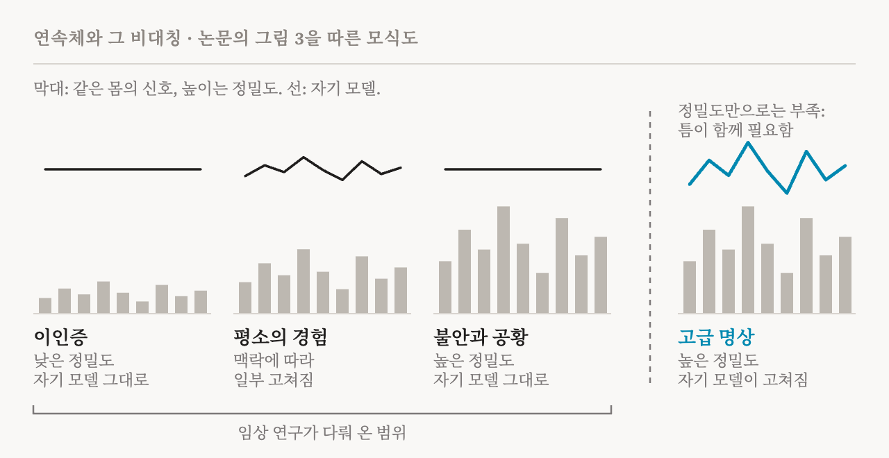
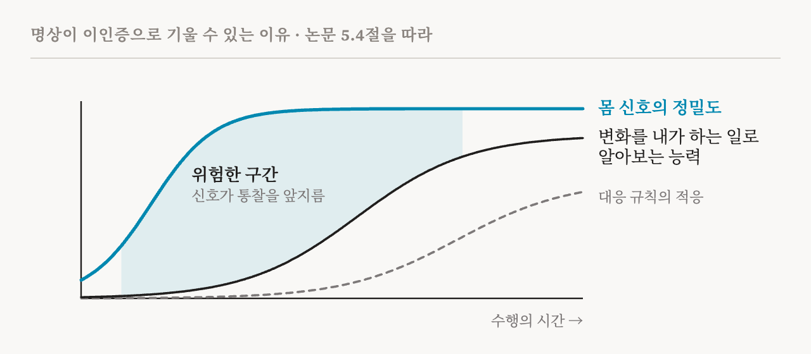

2026년 11월, 매사추세츠 종합병원(Massachusetts General Hospital)의 명상 연구 프로그램(Meditation Research Program)이 웹사이트에 프리프린트 하나를 올렸습니다. 제목은 「투과성의 기술: 이인증과 고급 명상의 계산적 구별(The art of permeability: A computational distinction between depersonalisation and advanced meditation)」입니다. 저자는 4명입니다. 매사추세츠 종합병원과 킹스 칼리지 런던의 Fedal Saini, 마스트리흐트 대학교의 Hagar Tal, 옥스퍼드의 Ruben Laukkonen, 그리고 이 프로그램을 이끄는 Matthew Sacchet입니다. Laukkonen은 제 AI 의식 연구 지도에 들어 있는 능동 추론 의식 이론 ‘아름다운 고리’를 함께 썼고, 「얽힌 고리」의 저자이기도 합니다. 새 데이터 없이 이론을 제안하는 논문이며, 프리프린트라서 아직 동료 심사를 거치지 않았습니다.
논문은 묘한 사실에서 출발합니다. 아주 다른 두 무리의 사람들이 거의 같은 경험을 말한다는 것입니다. 이인증 장애 사례 204건을 다룬 연구에서, 한 환자는 자기 목소리와 몸에 대해 “내 것이고, 나인데, 그냥 그렇게 느껴지지 않는다”고 말했습니다. 오래 명상해 온 한 사람은 몸이 “너무 퍼져서 어디에 있는지 알기가 아주 어렵다”고 했고, 관점이 “내가 보는 게 아니라 세계가 보는 것 같다”고 했습니다. 두 경우 모두, 몸 안에 있는 자아라는 조용하고 평범한 감각이 옅어집니다. 그런데 앞의 사람들에게 이 변화는 괴로운 소외이고, 뒤의 사람들은 이 변화와 함께 명료함, 평정, 안녕감을 말합니다.
저자들은 두 경험이 같은 다이얼을 반대 방향으로 돌린 결과라고 설명합니다. 이 글은 논문을 꼼꼼히 읽습니다. 그 다이얼이 무엇인지, 다이얼을 올리는 것이 왜 내리는 것의 반대가 아닌지, 왜 한쪽은 강요된 것처럼, 다른 쪽은 스스로 고른 것처럼 느껴지는지, 명상이 왜 때로 이인증을 낳는지, 그리고 이 설명이 인공적인 마음을 포함해 마음을 재는 일에 무엇을 말해 주는지 살펴봅니다.
몸으로 지은 자아
논문은 신경과학에서 흔한 견해에서 시작합니다. 자아의 가장 기본적인 층은 몸 안에 있다는 감각이고, 그 감각은 내수용감각(interoception)으로 지어집니다. 내수용감각은 심장 박동, 호흡, 내장처럼 몸의 안쪽 상태를 알리는 신호의 흐름입니다. 예측 처리의 관점에서 뇌는 이 신호를 그냥 받지 않습니다. 미리 예측하며, 위로 올라가는 것은 주로 오차, 곧 몸이 하리라 예상한 것과 실제로 한 것의 차이입니다.
오차가 얼마나 중요하게 다뤄지는지는 정밀도(precision), 곧 그 신호가 믿을 만하다는 뇌의 확신이 정합니다. 정밀도가 높은 오차는 위층의 믿음을 고칠 수 있고, 낮은 오차는 무시됩니다. 평소의 삶은 이 둘 사이에서 균형을 잡습니다. 신호가 쓸모 있으면 믿음을 고치고, 잡음이면 누릅니다.
그 뒤에는 알로스타시스(allostasis)가 있습니다. 필요가 닥치기 전에 미리 대비해 몸을 살아 있을 수 있는 상태로 유지하는, 뇌의 예측적인 몸 조절입니다. 이 관점에서 자기 모델은 몸을 조절하려고 있는 것입니다. 뇌가 몸을 관리하는 예측은 정서로 느껴지고, 유기체와 세계 사이의 경계도 그어 줍니다. 그래서 몸의 신호에 무게를 두는 방식이 바뀌면, 자아로 있다는 느낌도 바뀝니다.
이인증: 통로를 닫다
가볍게 스쳐 가는 이인증은 흔하며, 특히 스트레스를 받거나 지쳤을 때 잘 나타납니다. 만성적인 이인증 장애는 불안과 공황 뒤에 오는 경우가 많고, 외상 후 스트레스 장애, 우울증, 조현병과 자주 함께 나타납니다. 몸은 내 것으로 알아보지만 더는 온전히 느껴지지 않고, 지각은 멀쩡해도 색을 잃습니다. 정서적인 일에 대한 몸의 자동 반응은 무뎌지지만, 몸의 신호를 감지하는 능력 자체는 그대로입니다. 뇌에서는 전전두의 통제 영역이 더 활발하고, 몸의 신호가 모이는 중추인 전측 섬엽(anterior insula)은 덜 활발합니다.
앞선 능동 추론 설명들은 문제를 위계의 서로 다른 높이에 둡니다. Anil Seth와 동료들은 몸의 신호를 설명하는 단계에 둡니다. 예측이 부정확해지면 몸의 오차가 가리지 않고 억눌리고, 세계는 겉모습은 그대로인데 느껴지는 실재감을 잃습니다. Philip Gerrans는 문제를 소유감으로 옮깁니다. 기대한 느낌을 일으키지 못하는 경험은 내 것에서 밀려나 낯선 것으로 느껴집니다. George Deane과 동료들은 한 단계 더 올라가 통제감에 둡니다. 무엇을 해도 오차가 계속 커지면, 시스템은 자기 행동에 대한 확신을 잃습니다.
Saini 자신의 앞선 설명인 ‘내수용 침묵(interoceptive silencing)’은 다른 설명들이 비켜 간 두 질문을 다룹니다. 아무 일도 없을 때 왜 이인증이 시작될 수 있는지, 그리고 왜 오래가는지입니다. 답은 역설적 각성입니다. 몸은 큰 위협을 알리는데 바깥 세계에는 아무 위험도 없고, 시스템에는 둘 사이의 모순을 풀 추론이 없습니다. 그래서 몸의 신호 자체의 정밀도를 낮춥니다. 경보는 계속 울리지만, 위층에서는 아무도 듣지 않습니다. 위층의 믿음은 그대로 남지만, 그 믿음을 떠받칠 증거와는 끊어집니다.
명상: 통로를 열다
여기서 고급 명상은 차분함이나 주의력 자체가 아니라, 경험이 어떻게 짜이는지 탐구하는 것을 목표로 하는 후기 단계의 수행을 말합니다. 논문은 경험의 구조 자체를 탐구 대상으로 삼는 해체적 수행에 집중합니다. 헌신적이거나 구성적인 수행은 다르게 작동할 수 있어서 다루지 않습니다.
계산의 말로 하면, 이런 수행은 정밀도가 놓이는 자리를 바꿉니다. 지금 이 순간의 감각에 오래 주의를 기울이면, 특히 몸 안에서 오는 낮은 층 신호의 정밀도는 올라가고, 서사적 자아를 붙드는 높은 층의 자전적 믿음은 무게가 줄어듭니다. 그러면 몸의 각성을 ‘불안’이나 ‘설렘’이라는 이름이 붙기 전에, 날것의 감각으로 먼저 만나게 됩니다.
두 번째 재료는 메타 자각, 곧 마음이 스스로를 모델링하는 일을 일어나는 대로 지켜보는 능력입니다. Lars Sandved-Smith와 동료들의 연구는 이를 자기 주의의 정밀도를 조절하는 법을 배우는 일로 모델링합니다. 아름다운 고리는 이를 정밀도의 전체 장으로 넓히고, Laukkonen과 동료들은 이것을 인식적 깊이, 곧 자기가 아는 것을 아는 능력이라고 부릅니다. 이런 능력이 충분히 자라면, 서사적 자아를 제자리에 붙드는 믿음에서도 정밀도를 거둘 수 있습니다. 이 분야의 문헌은 이 단계를 탈구성(defabrication)이라고 부릅니다.
하나의 다이얼, 두 개의 극
논문의 핵심 주장은 두 경험을 한 축 위에 놓습니다. 저자들은 이 축을 자기 모델링에 대한 몸의 제약이라고 부릅니다. 순간순간의 몸의 오차가 자아를 이루는 믿음에 얼마나 강하게 닿아 그 믿음을 고치느냐입니다. 이를 가리키는 저자들의 용어가 투과성(permeability)입니다.
한쪽 끝에서 이인증은 방어 전략입니다. 뇌가 배운 대응 규칙이 몸의 각성을 손쓸 수 없는 위협으로 계속 읽으면, 몸이 흔들릴 때마다 채울 수 없는 통제 요구가 새로 생깁니다. 들어오는 통로의 정밀도를 낮추면 그 요구가 끝납니다. 저자들은 뇌가 왜 하필 이 길을 택하는지도 설명합니다. 대응 규칙을 다시 배우는 일은 느립니다. 위층 믿음의 무게를 낮추는 것도 방법이지만, 그러려면 자기 사전 믿음을 스스로 다룰 수 있어야 합니다. 반면 신호의 이득을 낮추는 일은 뇌가 늘 하는 일입니다. 되풀이되면 이 조치는 습관이 되고, 결국 만성 상태가 됩니다. 그리고 통로가 닫혀 있으니, 잘못된 대응 규칙은 자신을 고쳐 줄 증거를 끝내 만나지 못합니다. 방어가 지키는 것은 바로 고장 난 부분입니다.
다른 쪽 끝에서는 안전하고 요구가 적은 조건에서 같은 장치가 반대로 돌아갑니다. 몸의 오차가 더 높은 정밀도를 얻어 여러 층의 추론을 빚습니다. 평소의 삶에 충분한 대응 규칙도 빠른 행동에 맞춰져 있어서 거칩니다. 평소라면 걸러졌을 증거에 거듭 노출되면, 그 규칙이 더 섬세해질 수 있습니다.
| 이인증 | 고급 명상 | |
|---|---|---|
| 출발점 | 배운 대응 규칙이 몸의 각성을 위협으로 읽음 | 평소 삶에 충분한 대응 규칙, 안전한 조건 |
| 정밀도에 일어나는 일 | 몸의 오차를 입구에서 낮춤 | 몸의 오차를 높이고, 위층 믿음은 느슨해짐 |
| 자기 모델 | 안정적이고, 고쳐지지 않고, 동떨어짐 | 순간순간 고쳐지고, 때로 느슨해짐 |
| 자각이 닿는 곳 | 변화는 보이지만, 그것을 만드는 과정은 보이지 않음 | 자아를 짓는 과정 자체 |
| 느낌 | 강요되고 비현실적임 | 내가 하고 있고, 달리 할 수도 있는 일 |
| 뇌 | 외측 전전두피질은 높고, 전측 섬엽은 낮음 | 초기 수행: 전측 섬엽은 높고 내측 전전두피질은 낮음. 뒤의 단계에서는 둘 다 잠잠해짐 |
올리는 것은 내리는 것의 반대가 아니다
논문에서 가장 흥미로운 부분은 비대칭입니다. 몸 신호의 정밀도를 낮추는 것만으로 이인증에 이를 수 있지만, 정밀도를 높이는 것만으로는 명상의 상태에 이르지 못합니다.
불안과 공황이 그 이유를 보여 줍니다. 거기서는 몸 신호의 정밀도가 이미 높아서, 작은 변화도 엄청난 무게를 얻습니다. 그런데도 자기 모델은 고쳐지지 않습니다. 각성은 이미 위협이라는 이름표를 단 채 도착하고, 달아나거나 진정하려는 것 같은 교정 반응이 곧바로 일어나, 반대 증거가 끼어들 틈도 없이 위협 판단을 확인해 버리기 때문입니다. 그래서 저자들은 쉽게 뒤섞이는 두 가지를 나눕니다. 신호가 위계의 꼭대기까지 닿는 것과, 그 신호가 닿은 믿음을 바꾸는 것입니다. 저자들이 말하는 투과성은 뒤의 것만을 뜻합니다.

믿음이 고쳐지려면 하나가 더 필요합니다. 틈입니다. 몸의 증거가 위층의 대응 규칙에 닿는 동안, 평소의 반응을 잠시 붙들어 두는 창입니다. 공황은 신호가 도착한 뒤에 그 창을 닫고, 이인증은 도착하기 전에 닫습니다. 저자들은 명상이 그 창을 열어 두는 훈련이라고 봅니다. 가만히 앉아 있으면 움직임이 엄격하게 제약되므로, 몸의 변화를 살펴봐도 아무 결과가 따르지 않습니다. 일부러 반응하지 않으면 창은 더 넓어집니다. 그리고 메타 자각이 자라면, 수행자는 창을 열어 두려고 가만히 있을 필요가 없어집니다. 자기 추론을 스스로 지켜보는 일이 창을 열어 둡니다.
과정을 보는가, 결과만 보는가
두 경험은 느낌도 다릅니다. 논문은 이를 철학자 Thomas Metzinger가 구별한 투명성과 불투명성으로 설명합니다. 어떤 과정의 내용만 경험에 나타나면 그 과정은 투명하고, 과정 자체가 보이게 되면 불투명합니다.
이인증에서 사람은 변화를 알아차립니다. 환자들이 ‘마치 ~인 것 같은’ 느낌, 동떨어진 관찰자가 된 느낌을 말하는 것도 그래서입니다. 자기 지각이 문자 그대로 틀렸다고 믿지는 않습니다. 하지만 무엇이 그 변화를 만드는지는 보지 못합니다. 자기 상태를 불안하게 살피기는 하지만, 그 살핌은 몸의 증거와 끊어진 자기 모델 위에서 돌아가서 붙잡을 것이 거의 없습니다. 결과는 부분적인 불투명성입니다. 변화는 보이지만, 그 원리는 보이지 않습니다. 그래서 환자는 변화를 그저 사정이 그렇다는 사실로, 붙잡을 손잡이가 없는 강요로 겪습니다.
고급 명상에서는 불투명성이 과정 자체에까지 닿습니다. 수행자는 자기 모델이 지어지는 것을 보고, 가장 정련된 단계에서는 경험의 주체라는 감각조차 지어진 것으로 드러납니다. 같은 느슨해짐도, 내가 하고 있는 것을 볼 수 있으면 자유로, 볼 수 없으면 상실로 느껴집니다. 그러면 변화는 시스템이 하고 있고 달리 할 수도 있는 일로 나타나고, 그래서 두려움의 대상이 되는 대신 유지되고 깊어질 수 있습니다.
명상이 잘못될 때
이 비대칭에는 실천적인 함의가 있습니다. 이인증은 명상의 부작용 가운데 손꼽히게 자주 보고되는 것이고, 추정치는 대상과 측정 방법에 따라 9%에서 25%까지 걸쳐 있습니다. 논문은 그 이유를 시간의 어긋남으로 설명합니다. 수행은 몸 신호의 정밀도를 빨리 올립니다. 그 변화를 하나의 과정으로 알아보는 성찰 능력은 오랜 훈련으로만 자라고, 몸의 신호를 통합하는 위층의 대응 규칙은 그보다도 느리게 바뀝니다.

초기에는 이 셋이 발을 맞추지 못할 수 있습니다. 몸의 신호는 새로운 힘으로 도착하는데, 수행자는 그 힘이 자기가 무게를 다시 매긴 데서 나왔다는 것을 보지 못하고, 기존 대응 규칙은 달라진 상태를 소화하지 못합니다. 그러면 시스템은 반대쪽에서 출발해 이인증과 같은 성찰 구성에 이릅니다. 변화를 고쳐야 할 문제로 여기고, 변화가 어디서 왔는지 배우는 대신 그 느낌을 없애려고 움직입니다. 그 시도가 실패하면, 다음으로 쓸 수 있는 수단은 억누르기입니다. 여러 리뷰에 따르면 위험이 가장 큰 때는 자아를 해체하려는 수행을 많이, 강하게 하는데 균형을 잡아 주는 수행도, 그 경험을 해롭지 않은 것으로 읽게 해 주는 틀도 없을 때입니다. 대응 규칙이 이미 강한 몸의 신호를 위협으로 읽는 사람은 특히 취약합니다. 저자들은 이를 무리한 훈련에 비유합니다. 몸이 적응하는 속도를 앞질러 훈련하면 부상이 따르는 것과 같습니다.
지도의 빠진 위쪽 절반
논의는 이어서 임상 과학으로 넘어갑니다. 해리의 고리가 잘못된 대응 규칙이 교정되지 않게 지켜 준다면, 회복에는 몸의 증거가 돌아와야 합니다. 하지만 대응 규칙이 아직 잘못 맞춰진 채로 증거를 다시 들이면 옛 위협 반응만 되살아나고, 해리의 습관이 강한 사람에게서는 시스템이 다시 그 습관으로 돌아갑니다. 필요한 것은 더 많은 몸의 증거가 아니라 틈입니다. 단계의 순서가 중요하며, 그런 받침 없이 명상을 권하면 줄이려던 해리를 오히려 굳힐 수 있습니다.
저자들은 임상 신경과학이 이 연속체의 절반만 그려 왔다고도 주장합니다. 이인증의 억누름에서 공황과 외상의 과잉 반응까지입니다. 조절에 실패한 사람들을 중심으로 연구하다 보니, 증상이 없는 상태인 평범한 기능을 몸 조절이 할 수 있는 일의 상한처럼 다뤄 왔다는 것입니다. 강한 몸의 증거가 방어를 부르지 않고 자아를 고치는 구성은 아직 거의 모델링되지 않았고, 고급 명상가에게서 그 구성을 연구할 수 있습니다.
측정 도구에도 같은 맹점이 있습니다. 표준적인 내수용감각 검사는 이를테면 자기 심장 박동을 세게 해서, 신호를 감지할 수 있는지를 묻습니다. 이인증 환자도 다른 사람들만큼 잘하고, 증상이 얼마나 심한지는 점수와 관계가 없습니다. 숙련된 명상가도 정확도에서는 명상하지 않는 사람과 같고, 다른 점은 주로 스스로 얼마나 확신하느냐입니다. 두 경우 모두, 이론이 관심을 두는 차이는 몸의 증거가 위층의 믿음을 고치느냐이고, 검사는 그 차이를 재지 않습니다. 저자들은 다른 종류의 검사를 제안합니다. 기대한 결과가 거듭 오지 않을 때, 몸의 신호에 묶인 예측이 어떻게 바뀌는지를 추적하는 것입니다.
따져 볼 점
첫째, 여기서 ‘계산적’은 모델이 아니라 틀을 뜻합니다. 논문은 시뮬레이션을 만들지도, 데이터에 맞추지도 않으며, 도판은 저자들 말대로 예시일 뿐입니다. 시간의 어긋남은 원리상 형식적으로 모델링할 수 있다고 말하지만, 실제로 모델링하지는 않습니다. 주장들은 앞뒤가 맞고 큰 틀에서 시험할 수 있지만, 여기서 시험된 것은 없습니다.
둘째, 신경 증거의 상당 부분은 얇거나 초기 단계입니다. 이인증의 전두–섬엽 그림은 영상 연구와 자극 연구에 기댑니다. 명상 쪽은 주로 초기 단계의 수행, 첫 시도로 보고된 뇌 자극 연구, 한 수행자를 집중적으로 측정한 사례 연구 같은 것에 기댑니다. 저자들 스스로도 섬엽–전전두 축을 확립된 바탕이 아니라 그럴듯한 바탕으로 제시합니다.
셋째, 범위가 일부러 좁습니다. 논문은 이인증을 진단 전체가 아니라 하나의 현상으로 다뤄 비현실감을 제쳐 두고, 명상도 해체적 수행만 다룹니다. 수행에 필요하다고 말하는 윤리적, 태도적, 관계적 맥락은 논문 스스로 앞으로 모델링할 일로 남겨 둡니다.
넷째, 설명은 저자들 자신의 최근 연구, 곧 Saini의 내수용 침묵 모델과 Sacchet 프로그램의 리뷰들에 기댑니다. 여러 연구를 종합하는 논문으로서는 자연스럽지만, 그만큼 독립적인 시험이 더 중요해집니다.
마지막으로, 한 비교는 보이는 것보다 덜 말해 줄 수 있습니다. 논문은 명상과 이인증이 같은 전두–섬엽 구조를 쓴다고 말합니다. 하지만 몸의 조절은 거의 모두 그 회로를 거치므로, 겹친다는 사실만으로는 말해 주는 것이 적습니다. 더 강한 주장은 둘이 그 회로를 반대 방향으로 바꾼다는 것이고, 그것을 보이려면 같은 사람들을 시간에 따라 따라가는 증거가 필요합니다.
AI에 주는 것
논문은 AI에 대해 아무 말도 하지 않으므로, 아래는 제 해석입니다. 그래도 논문의 두 생각은 AI에도 쓸모 있게 옮겨 올 수 있습니다.
첫째는 측정에 관한 지적입니다. 신호가 감지되는지 확인하는 검사는, 그 신호가 위층에서 무엇을 바꾸는지 말해 주지 못합니다. 해석 가능성 연구도 같은 틈과 마주합니다. 「안에서 보는 AI」 23편 「프로빙」에서 썼듯, 프로브는 모델의 활성값에서 어떤 정보를 높은 정확도로 읽어 낼 수 있지만, 뒤의 층은 그 정보를 전혀 쓰지 않을 수 있습니다. 감지는 통합이 아닙니다. 심장 박동에서도, 트랜스포머에서도 그렇습니다. 저자들이 제안하는 검사, 곧 기대한 결과가 거듭 오지 않을 때 예측이 어떻게 바뀌는지 지켜보는 검사는 본질적으로 개입 실험입니다. 해석 가능성 연구가 모델 안에 무엇이 들어 있는지에서 모델이 무엇을 쓰는지로 넘어갈 때 쓰는 인과적 시험과 같은 종류입니다.
둘째는 투과성 자체, 곧 안쪽의 신호가 시스템의 자기 모델을 얼마나 고칠 수 있느냐입니다. 제 워크숍 논문 「숨겨왔던 모델의 마음」은 언어 모델에서 낮은 투과성의 한 모습을 찾았습니다. 모델 내부의 점수는 맞은 답과 틀린 답을 꽤 잘 구별했지만, 모델이 말한 확신은 맞든 틀리든 대개 95였습니다. 그리고 32편 「모델이 자신을 설명할 수 있을까」는 이 논문의 다른 질문을 기계의 말로 묻습니다. 모델이 자신에 대해 보고할 때, 과정을 보고 있는 걸까요, 결과만 보고 있는 걸까요?
AI 복지 쪽에서 보면 이 논문은 반대 방향을 가리킵니다. 이 논문이 그리는 자아는 살려 두어야 하는 몸에서 시작하고, 느낌은 그 조절의 느껴지는 면입니다. 언어 모델에게는 조절할 몸도, 스스로 균형을 지켜야 할 무엇도 없습니다. 그러니 이 설명에 따르면, 모델이 말하는 자아는 우리의 자아와 같은 방식으로 지어진 것이 아닙니다. 「얽힌 고리」가 모델 속 감정의 흔적을 그림자라고 부른 것과 비슷합니다. 위의 비교들은 시스템의 신호가 자기 서술에 어떻게 닿는지에 관한 것이지, 거기에 누군가가 있느냐에 관한 것이 아닙니다.
“자아의 감각을 잃는 일은 병이 될 수도, 통찰이 될 수도 있습니다. 이 설명에 따르면, 차이는 내가 무엇을 놓아주고 있는지 볼 수 있느냐에 있습니다.”